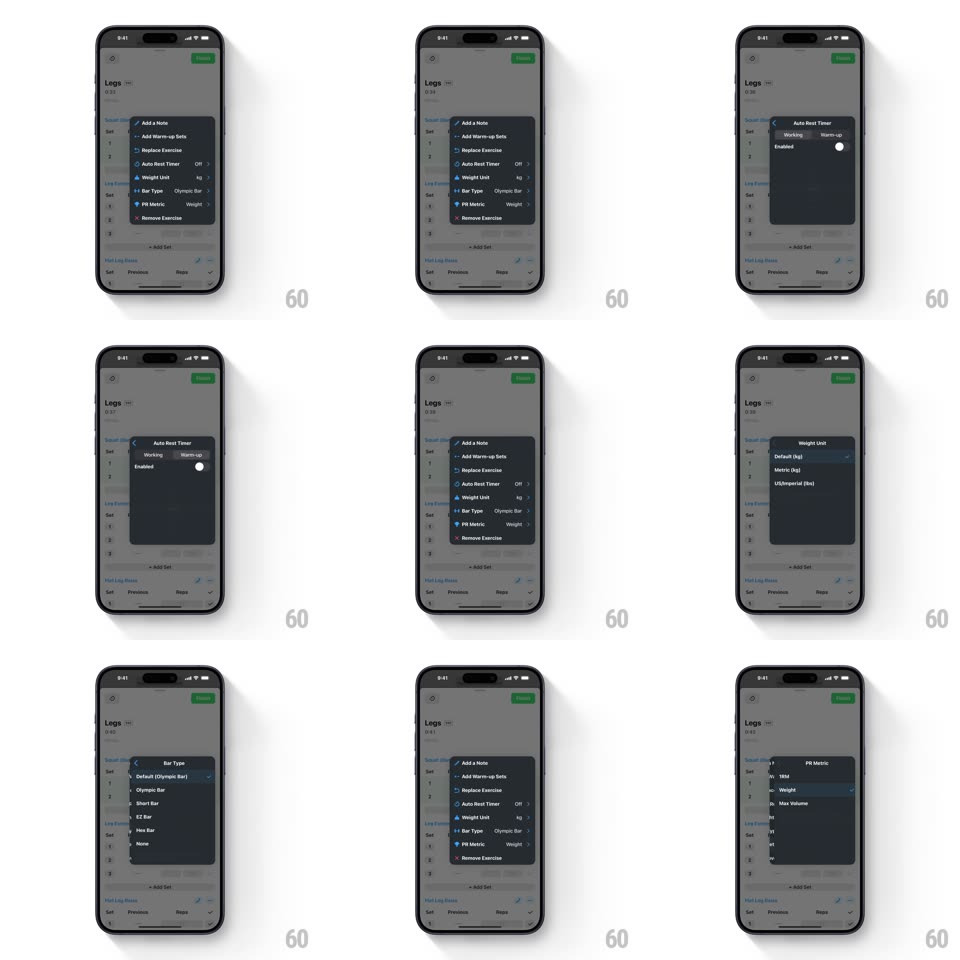

Media
Frame-by-frame

Rebuild this interaction 1:1: Strong's nested exercise menu - the dark context menu morphs its height per level and slides content horizontally as you drill into Auto Rest Timer, Weight Unit, or PR Metric sub-pages, with smooth push/back transitions.

Rebuild this interaction 1:1: Strong's nested exercise menu - the dark context menu morphs its height per level and slides content horizontally as you drill into Auto Rest Timer, Weight Unit, or PR Metric sub-pages, with smooth push/back transitions.
## Integration
Integration: stack-agnostic spec - springs given as stiffness/damping, timed motions as duration + curve; map every value to your framework and animation library of choice.
## Scene
The "Legs" workout page (exercise cards with set tables, green FINISH button). The floating dark menu lists "Add a Note, Add Warm-up Sets, Replace Exercise, Auto Rest Timer (Off), Weight Unit (kg), Bar Type (Olympic Bar), PR Metric (Weight), Remove Exercise". Sub-pages: "Auto Rest Timer" (Working/Warm-up rows, Enabled toggle), "Weight Unit" (Default kg/Metric kg/US, Imperial lbs), "PR Metric" (1RM/Weight/Max Volume).
## Motion spec
Pattern: nested menu with height morph + horizontal slide.
- Open: the menu scales in from its anchor (0.85 -> 1, spring ~420/22, 280ms) with a fade; the page behind dims slightly.
- Drill in (tap Auto Rest Timer / Weight Unit / PR Metric): the current list slides left and fades out while the sub-page slides in from the right (250ms, ease-out); simultaneously the menu's height morphs to the new content (same 250ms, ease-in-out) and a back chevron + title appear in the menu header.
- Back: the reverse - sub-page exits right, parent list enters from the left, height morphs back; the header reverts.
- Toggle (Auto Rest Timer Enabled): the switch animates normally and the row's trailing value ("Off" -> "On") crossfades.
- Selection rows (Weight Unit, PR Metric): the picked row highlights and a checkmark slides in; after 350ms the menu auto-returns to the parent level with the new value crossfaded into the trailing label.
## Calibration
- Height morph and content slide share one clock - the box never lags its contents.
- Width stays constant across levels; only height breathes.
## Reduced motion
Level changes crossfade without sliding; height snaps.
## Don't miss
- The menu header's back chevron slides in from the left edge while the title crossfades.
- Trailing values in the parent list (Off, kg, Weight) update live after each sub-page pick.